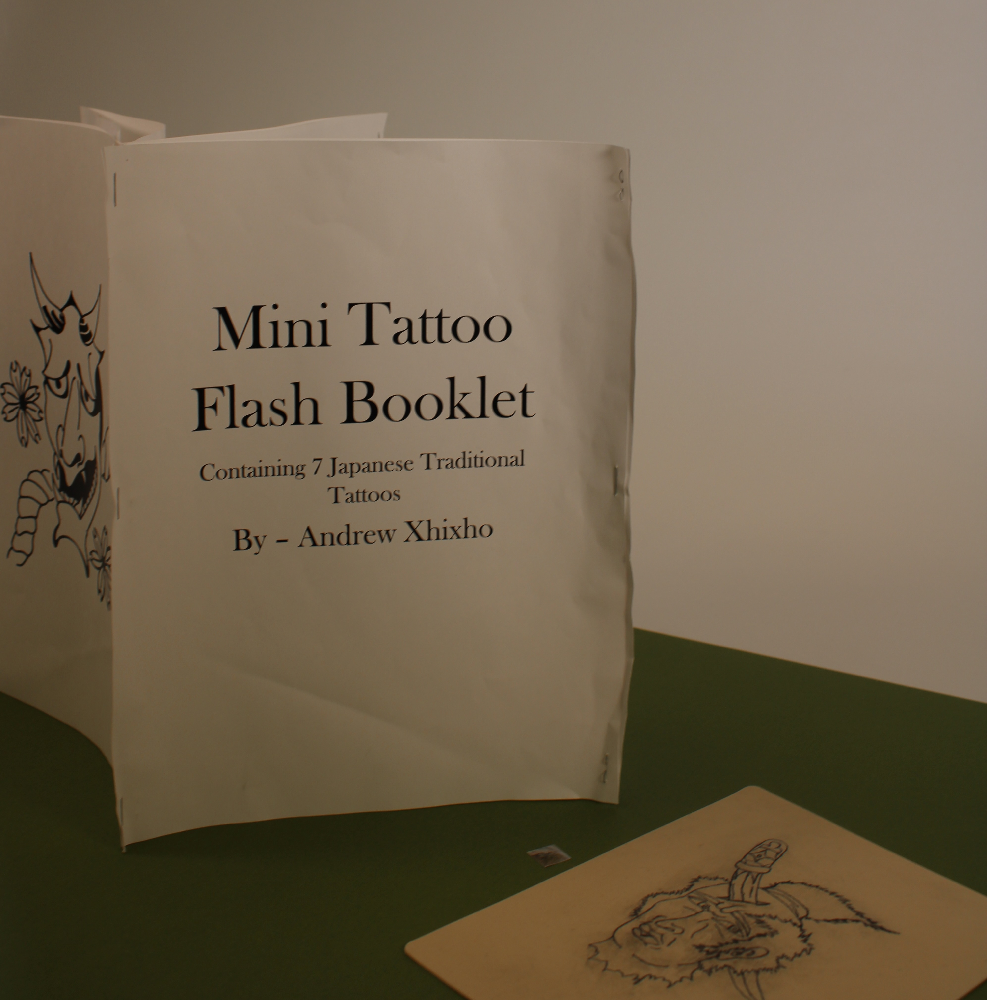
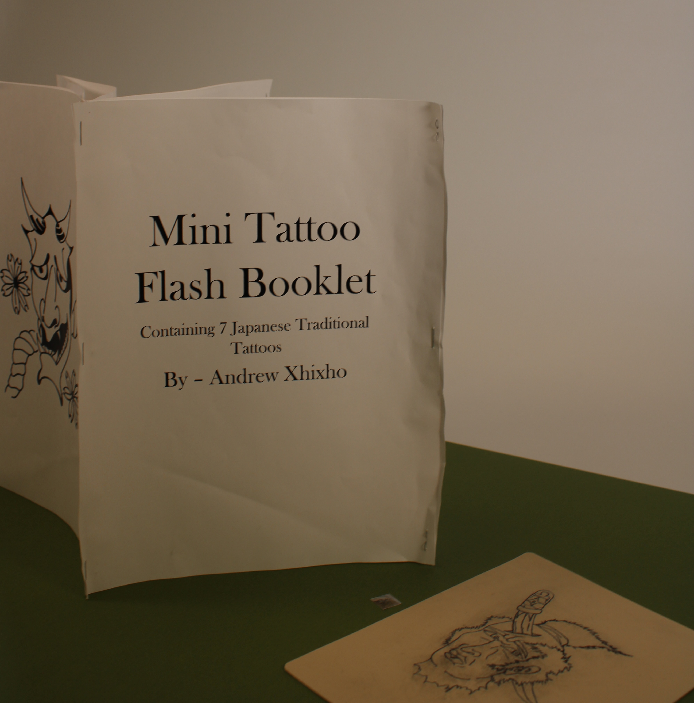

Andrew Xhixho's Project

 

Description
Explores the symbolism of traditional Japanese tattoos, particularly those associated with the Yakuza. These tattoos, often steeped in different themes and served for both personal and cultural reasons. This project reflects a deep dive into the cultural and symbolic significance of Japanese tattoo traditions and their modern-day interpretations.
Categories
- Tiny Pic
- Foldable
- Time-Based Media
The tiny pic is a faze of the tattooing process. This part is where excess ink is being cleaned.
Foldable forms a Kanji symbol, stands for tattooing the body. Inspired by traditional Japanese tattoos, associated with the Yakuza.
Time-lapse of fake skin being tattoed. Inspired by Yakuza tattoos and their meaning.